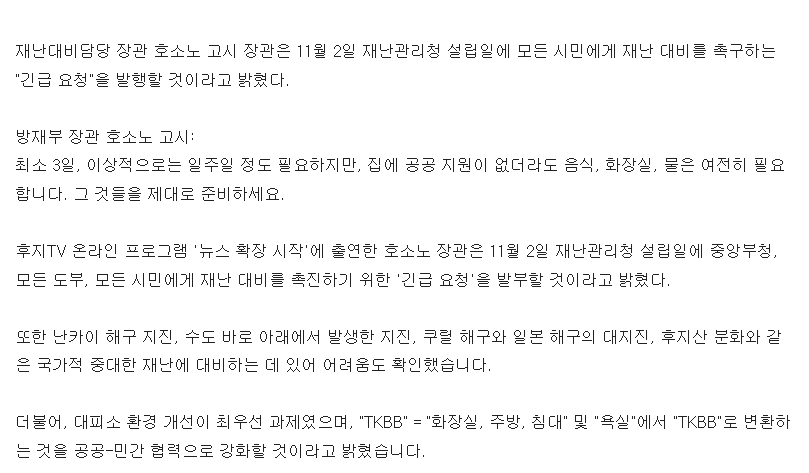

https://www.fnn.jp/articles/-/1140337
일본쪽에서 지진 관련 주류 학설인 대지진 주기 가설에 따르면
이제 슬슬이라고 하니까 말이지.

https://www.fnn.jp/articles/-/1140337
일본쪽에서 지진 관련 주류 학설인 대지진 주기 가설에 따르면
이제 슬슬이라고 하니까 말이지.
젠장 11월 일본 여행인데
예정된 재난:
난카이 트로프 대지진
관동 수도권 직하지진
쿠릴해구 대지진
후지산 분화
일본은 그냥 동해랑 인접한 지역이 제일 안전하지 싶다
후쿠오카, 니이가타, 아키타, 삿포로시 같은
삿포로는 괜찮은거 맞지???
영국도 이런거 하고 있잖아. 뭐여 ㄷㄷ
우리나라도 북괴의 위험에 대비해서 쌀이랑 물 라면을 비축해야하나? ㅋㅋㅋ
탄도 미사일을 쏘던말던 관심 없는 나라인데 ㅋㅋㅋ 핵실험을 하던말던
라면은 생각보다 유통기한이 길지 않습니다.
먹을 수 있다면 일단 ok
쌀 물 통조림음식 준비해야함
쌀과 라면은 조리에 많은 물과 연료를 필요로 하기 때문에 비상식량으로 아주아주아주 부적절함
통조림과 3분요리, 햇반을 준비해두는걸 추천
우리는 항상 일년치의 김치와 라면한박스, 물이 집에있음
???: 북괴가 위험하다는 증거부터 대시오
12월에 오사카 가는데ㅋㅋㅋ
오키나와는 괜찮자나
일본사는데 물이랑 비상식량 비축해두긴함
EDC 붐은 온다
3일이면 30일 짜리로 준비해야함ㅋㅋㅋㅋ
점마들 축소해서 말하는거 엄청 많음
근데 솔직히 30일간 고립될지도 모르는 상황이면 이미 구조대고 뭐고 도시 전체가 전부 기능 못하는 아포칼립스 상황이라 차라리 번개탄이랑 가스레인지 하나 사는게 나을수도..
ㅈ대따 다음달에 구마모토 가는데
쥬고엔 고짓센
앗 다음달에 일본 가는데 안댜!!